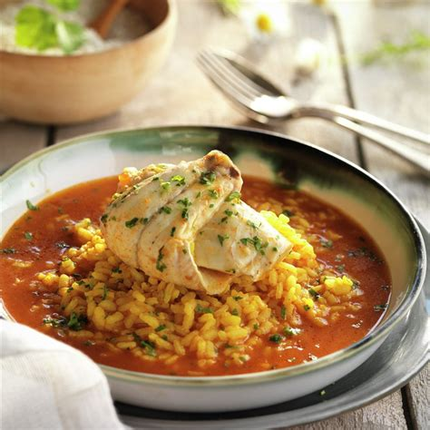
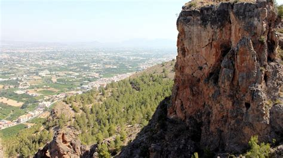
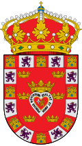

Murcia
Overview
Murcia is a region in southeastern Spain known for its warm climate and rich agriculture. The city of Murcia is the capital and has an important cultural and religious heritage.
Quick Facts
- Capital: Murcia
- Regional Language: Spanish
- Population: ~1.5 million
- Famous for: Orchards, traditional festivals, and gastronomy
- Fun Fact: Murcia has the longest river in the region, the Segura!
Popular Dishes
Caldero Murciano

Zarangollo
Michirones

Meat Pie

Famous Places
Murcia Cathedral

Murcia Casino

Plaza de las Flores

El Valle Regional Park

Best Time to Visit
The best time to visit Murcia is in spring (March–May) and autumn (September–November) to enjoy pleasant weather and festivals.
Regional Symbols
- Flag:
- Coat of Arms: 